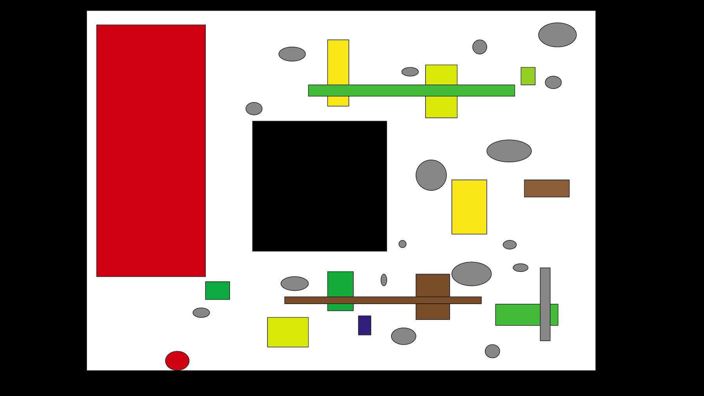
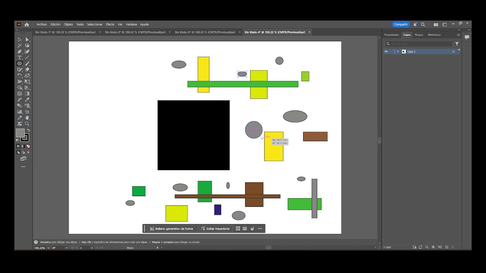

Motion y video · 2025
Formas de la desigualdad
Video sobre un boceto inspirado en el suprematismo
- Contexto
- Arte Digital e Historia del Arte Moderno, UVM
- Fecha
- octubre de 2025
- Mi rol
- Boceto vectorial, grabación del proceso y edición del video
- Herramientas
- Adobe Illustrator y edición de video

El reto
Representar cómo las diferencias sociales fragmentan la estructura de la sociedad usando solo formas geométricas simples y colores planos, como en el suprematismo de Kazimir Malévich.
Proceso
Construí el boceto en Illustrator y grabé el proceso completo. El video explica el propósito, el significado de cada figura y color, y lo relaciona con tres obras de referencia de la abstracción (dos de Malévich y una de Kandinsky); cierra con una reflexión sobre cómo el arte abstracto puede hablar de problemas sociales.
Resultado
Un video con el proceso de construcción del boceto y la composición final.
